10 โรคแทรกซ้อนที่คนท้องต้องระวัง
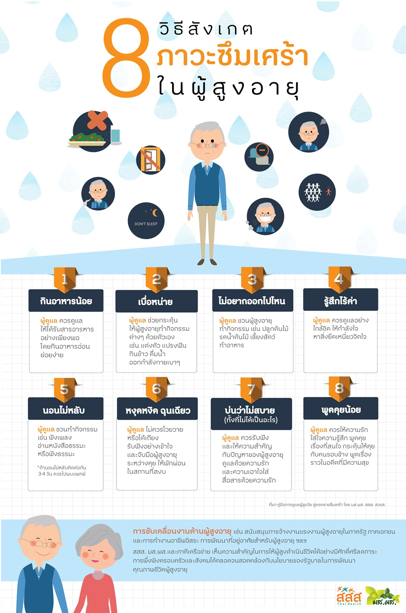
8 วิธีการสังเกตภาวะซึมเศร้าในผู้สูงอายุ
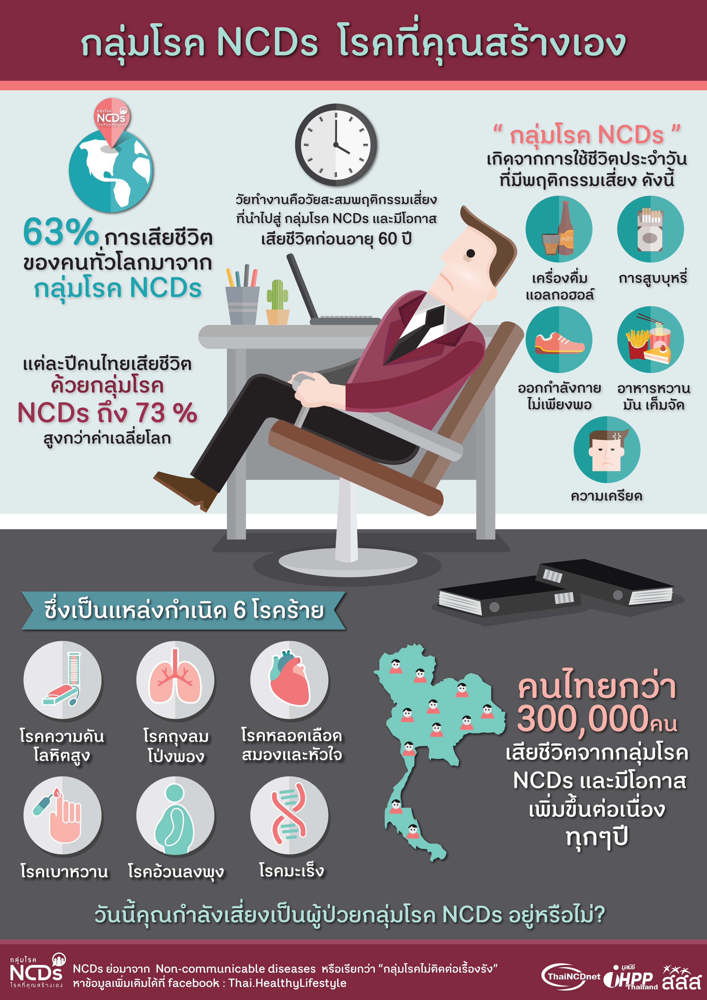
กลุ่มโรค NCDs เกิดจากการใช้ชีวิตประจำวันที่มีพฤติกรรมเสี่ยง
การนอนหลับ
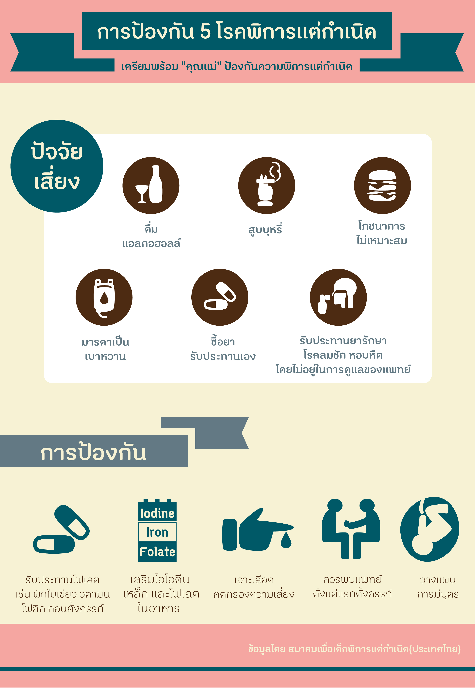
การป้องกัน 5 โรคพิการแต่กำเนิด
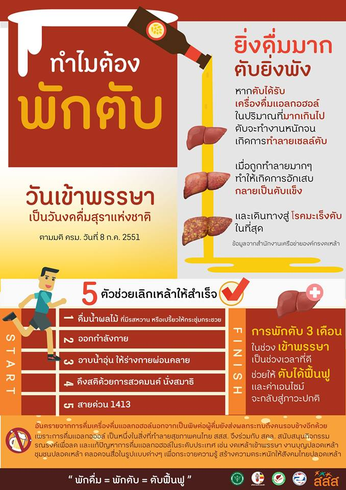
ทำไมต้องพักตับ
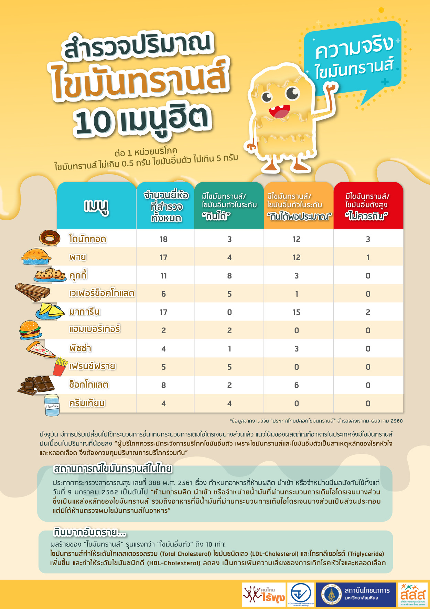
ไขมันทรานส์
คุณคือผู้ดื่มแบบไหน
การคุมสัดส่วนอาหารแต่ละมื้อ
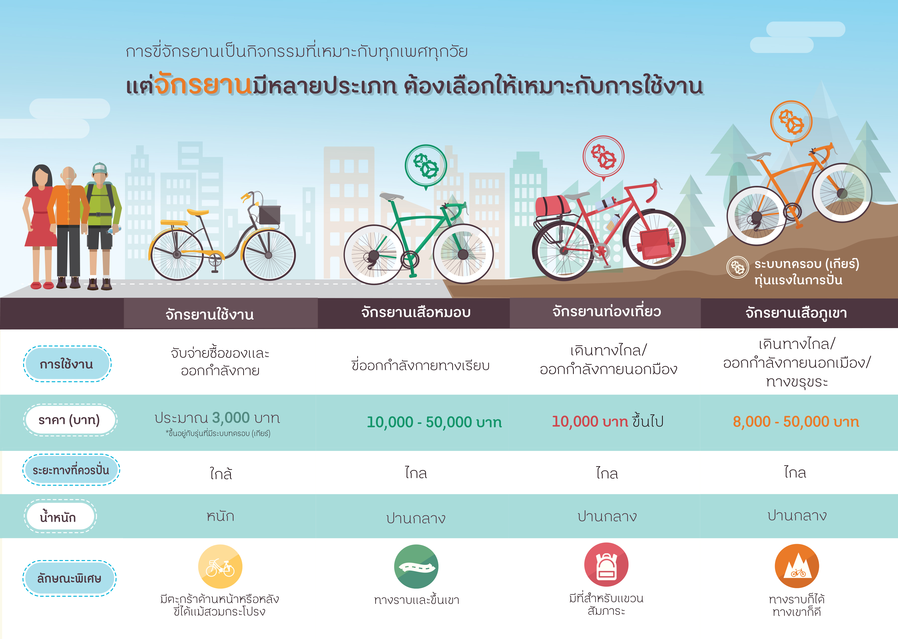
การเลือกจักรยานให้เหมาะสมกับการใช้งาน
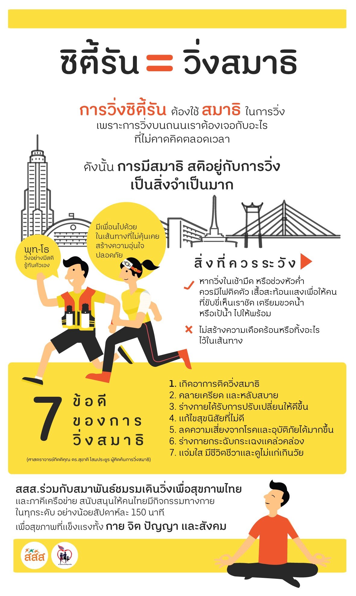
ซิตี้รันเท่ากับวิ่งสมาธิ
ต่อมทอมซิลในเด็กควรตัดหรือเปล่า
ต่อมลูกหมากโต
 ตรวจสอบความพร้อมก่อนใช้จักรยาน
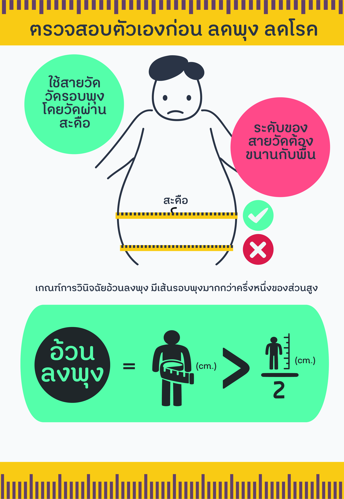
ตรวจสอบตัวเองก่อน_ลดพุง_ลดโรค
ปวดศีรษะแบบไหนไม่ธรรมดา
ประจำเดือนไม่มาหรือมาไม่ตรง
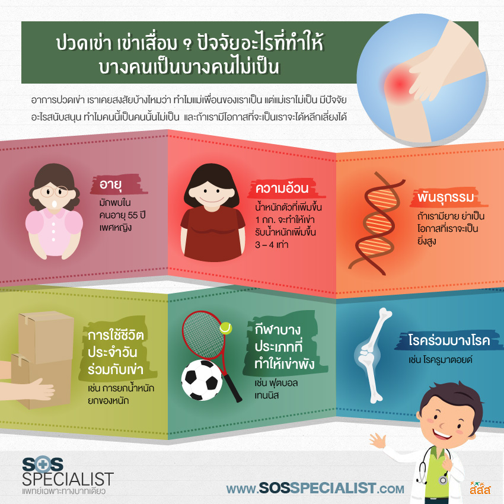
ปวดเข่า เข่าเสื่อม ปัจจัยอะไรที่ทำให้บางคนเป็น บางคนไม่เป็น
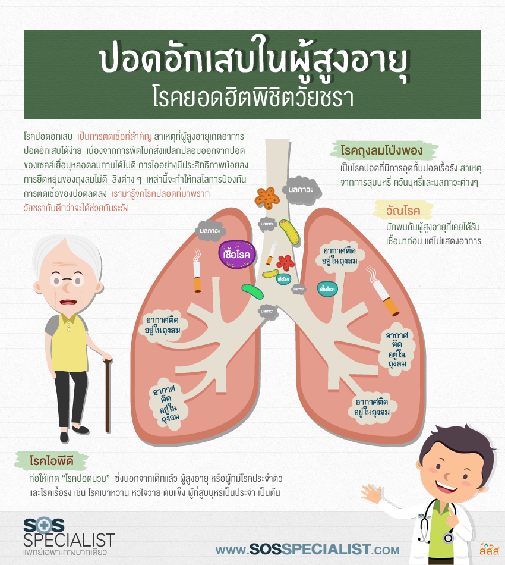
ปอดอักเสบในผู้สูงอายุ
Art © สสส.
ตรวจสอบความพร้อมก่อนใช้จักรยาน
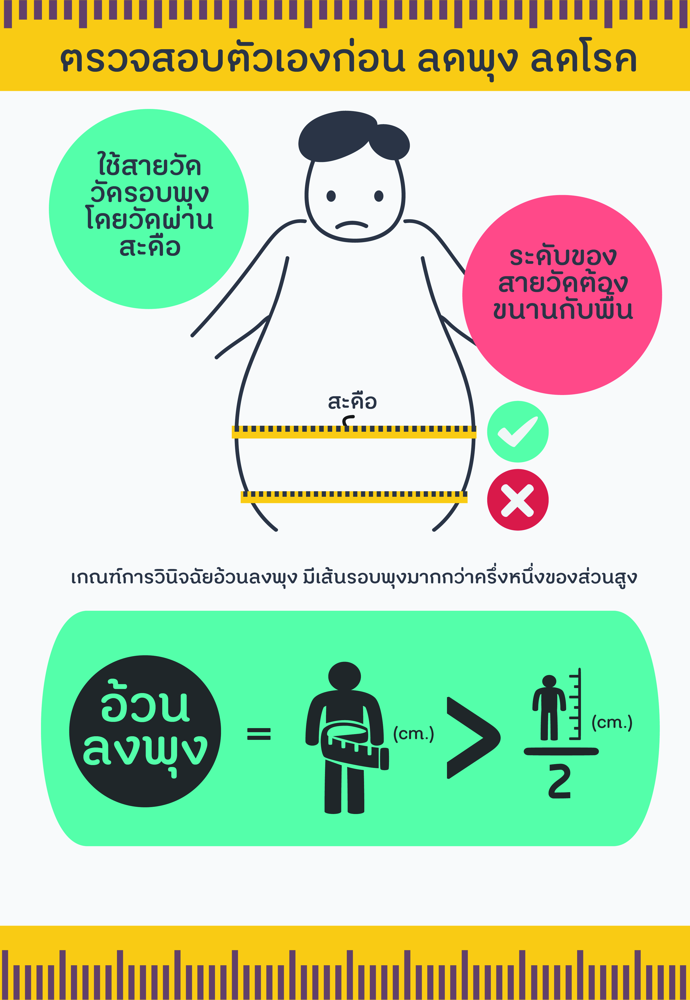
ตรวจสอบตัวเองก่อน_ลดพุง_ลดโรค
ปวดศีรษะแบบไหนไม่ธรรมดา
ประจำเดือนไม่มาหรือมาไม่ตรง
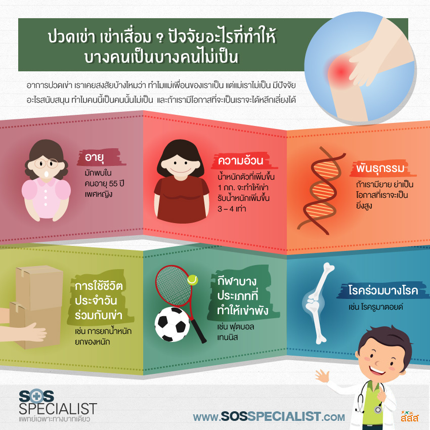
ปวดเข่า เข่าเสื่อม ปัจจัยอะไรที่ทำให้บางคนเป็น บางคนไม่เป็น
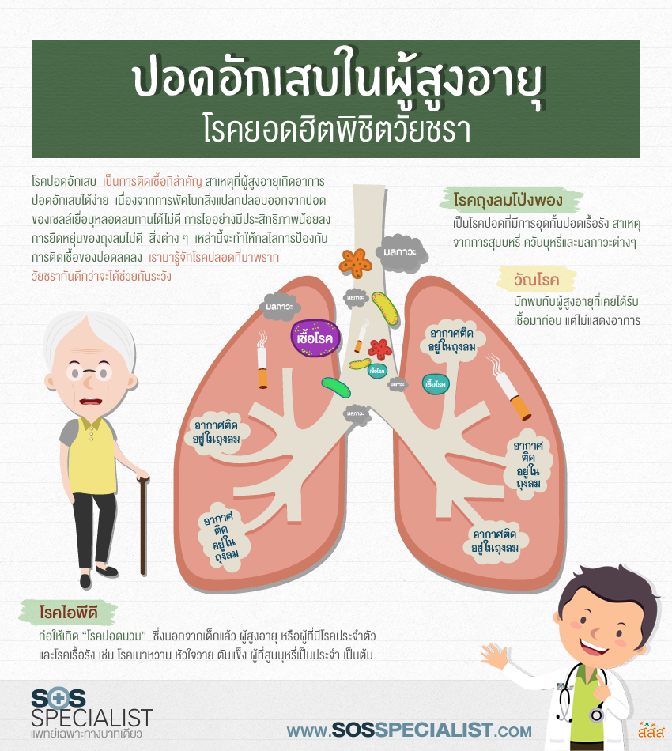
ปอดอักเสบในผู้สูงอายุ
Art © สสส.
To Top